9 Electricity
Electric current, potential difference, resistance and resistivity
Learning objectives
By the end of this chapter, you should be able to:
- define electric current as the rate of flow of charge and use \(I=Q/t\);
- define potential difference as energy transferred per unit charge;
- recall and use the equations \(P=VI\), \(P=I^2R\) and \(P=V^2/R\);
- define resistance and use Ohm’s law \(V=IR\);
- sketch and interpret \(I\)-\(V\) characteristics for ohmic conductors, filament lamps, diodes and thermistors;
- define and use resistivity \(\rho=RA/L\);
- explain how the resistance of a wire changes when it is stretched, heated or illuminated.
9.1 Electric current and potential difference
Electric current
Electric current is the rate of flow of charge:
\[I=\frac{Q}{t},\]
where \(Q\) is the charge passing a point and \(t\) is the time. The unit is the ampere, \(\mathrm{A}=1\ \mathrm{C\,s^{-1}}\).
In a metal, the charge carriers are free electrons. The current is given by
\[I=nAve,\]
where \(n\) is the number density of charge carriers, \(A\) is the cross-sectional area, \(v\) is the mean drift velocity and \(e\) is the charge on each carrier.
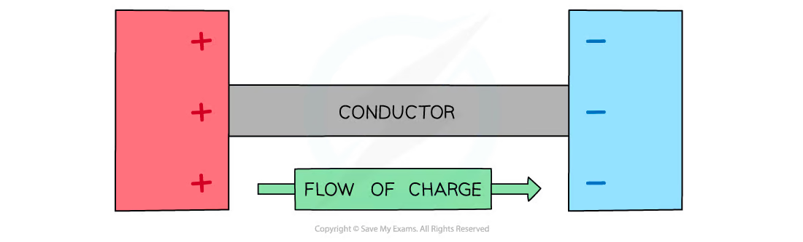
Worked Example 1 - electric current
A charge of \(180\ \mathrm{C}\) passes through a component in \(2.0\ \mathrm{min}\). Calculate the current.
Solution
Convert the time:
\[ t=2.0\ \mathrm{min}=120\ \mathrm{s} \]
Then
\[ I=\frac{Q}{t}=\frac{180}{120}=1.50\ \mathrm{A}. \]
Potential difference
The potential difference between two points is the energy transferred per unit charge that passes between the points:
\[V=\frac{W}{Q}.\]
The unit is the volt, \(\mathrm{V}=1\ \mathrm{J\,C^{-1}}\).
For a component carrying current \(I\) with p.d. \(V\) across it, the electrical power is
\[P=VI.\]
Worked Example 2 - potential difference and power
A motor transfers \(3.6\times10^3\ \mathrm{J}\) of energy when \(240\ \mathrm{C}\) of charge passes through it. If the current is \(4.0\ \mathrm{A}\), calculate the p.d. across the motor and its power.
Solution
The p.d. is
\[ V=\frac{W}{Q}=\frac{3.6\times10^3}{240}=15\ \mathrm{V}. \]
The electrical power is
\[ P=VI=(15)(4.0)=60\ \mathrm{W}. \]
Electron flow and conventional current
In a metal, electrons flow from the negative terminal to the positive terminal. Conventional current is taken as the direction in which positive charge would flow (opposite to electron flow).
When there is no current, the free electrons move randomly. A current is a net drift of electrons in one direction superimposed on this random motion.
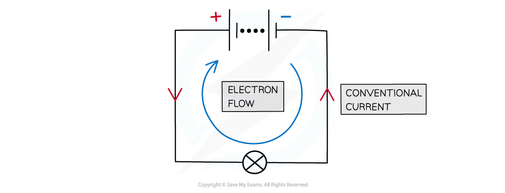
9.2 Resistance
Resistance and Ohm’s law
Resistance is defined as the ratio of potential difference to current:
\[R=\frac{V}{I}.\]
The unit is the ohm, \(\Omega=1\ \mathrm{V\,A^{-1}}\).
Ohm’s law states that the potential difference across a component is proportional to the current in it, provided the physical conditions (such as temperature) remain constant.
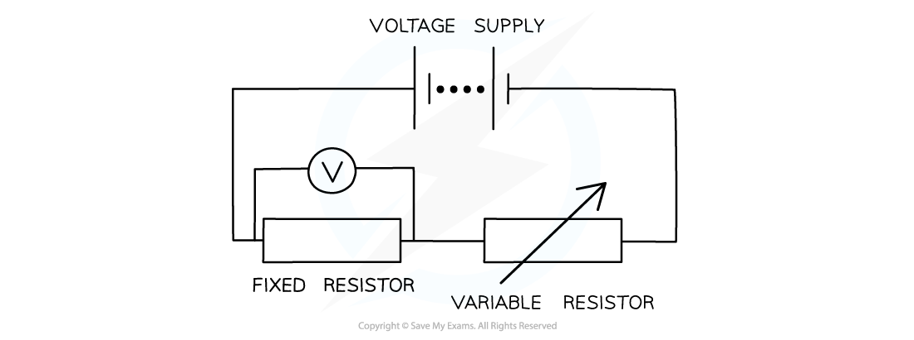
Worked Example 3 - resistance and Ohm’s law
A resistor carries a current of \(0.30\ \mathrm{A}\) when the p.d. across it is \(6.0\ \mathrm{V}\). Calculate its resistance. What current flows if the p.d. is increased to \(10\ \mathrm{V}\) and the temperature remains constant?
Solution
At \(6.0\ \mathrm{V}\):
\[ R=\frac{V}{I}=\frac{6.0}{0.30}=20\ \Omega. \]
With the same resistance:
\[ I=\frac{V}{R}=\frac{10}{20}=0.50\ \mathrm{A}. \]
I-V characteristics
- Metal wire at constant temperature: a straight line through the origin (ohmic, constant resistance).
- Filament lamp: the curve bends because the filament heats up; resistance increases with temperature, so the \(I\)-\(V\) graph becomes less steep at high \(V\).
- Semiconductor diode: current is (almost) zero for reverse bias; in forward bias, current rises steeply once the threshold voltage is exceeded.
- Thermistor: resistance decreases as temperature increases.
- LDR: resistance decreases as light intensity increases.
For a curved \(I\)-\(V\) graph, the resistance at a point is \(V/I\) (the ratio, not the gradient).
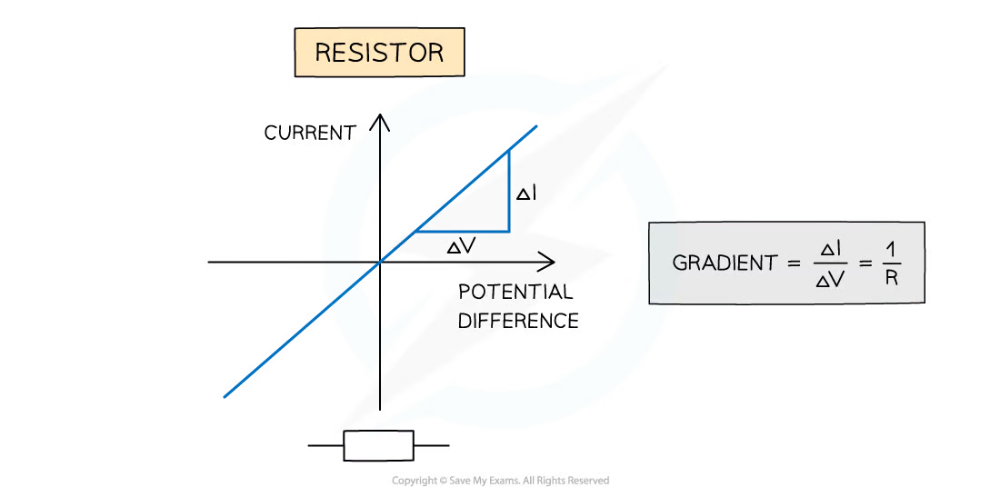
Power in resistors
Using \(V=IR\) with \(P=VI\):
\[P=VI=I^2R=\frac{V^2}{R}.\]
These forms are used when different pairs of quantities are known.
Worked Example 4 - electrical power in a resistor
A resistor of resistance \(12\ \Omega\) is connected to a \(24\ \mathrm{V}\) supply. Calculate the current and the power dissipated.
Solution
The current is
\[ I=\frac{V}{R}=\frac{24}{12}=2.0\ \mathrm{A}. \]
Using \(P=V^2/R\):
\[ P=\frac{24^2}{12}=48\ \mathrm{W}. \]
The same result follows from \(P=VI=(24)(2.0)\).
9.3 Resistivity
Resistivity
For a uniform conductor of length \(L\) and cross-sectional area \(A\),
\[R=\frac{\rho L}{A},\]
so the resistivity is
\[\rho=\frac{RA}{L}.\]
The unit of resistivity is \(\Omega\,\mathrm{m}\). Resistivity is a property of the material; it does not depend on the dimensions of the sample.
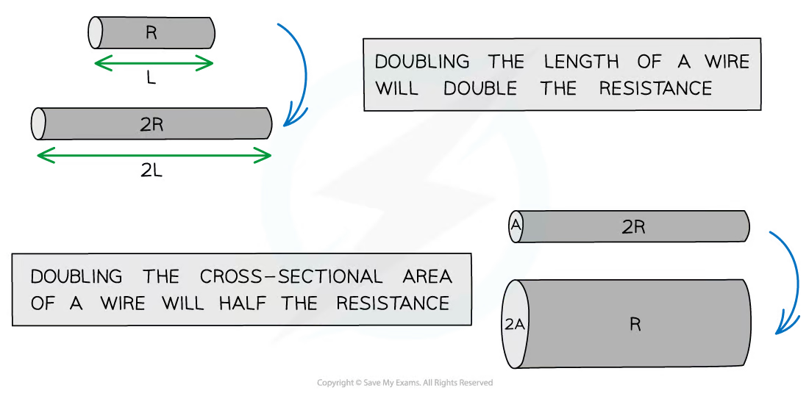
Worked Example 5 - resistivity of a wire
A wire has resistance \(4.0\ \Omega\), length \(2.0\ \mathrm{m}\) and cross-sectional area \(1.5\times10^{-6}\ \mathrm{m^2}\). Calculate the resistivity of the material.
Solution
\[ \rho=\frac{RA}{L} =\frac{(4.0)(1.5\times10^{-6})}{2.0} =3.0\times10^{-6}\ \Omega\,\mathrm{m}. \]
The answer is a material property; changing the wire’s dimensions would change \(R\) but not \(\rho\).
Changing dimensions and resistance
When a wire is stretched, its length increases and its cross-sectional area decreases. If the volume is constant, \(R\propto L^2\).
Resistance also changes with:
- temperature (metals: increases; thermistors: decreases);
- illumination (LDRs: decreases with more light);
- strain (strain gauges: resistance changes with extension).
To measure a small diameter accurately, use a micrometer screw gauge; the cross-sectional area is then \(A=\pi d^2/4\).
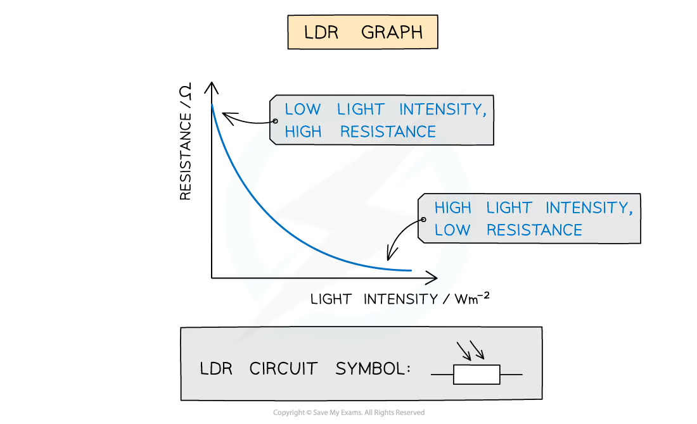
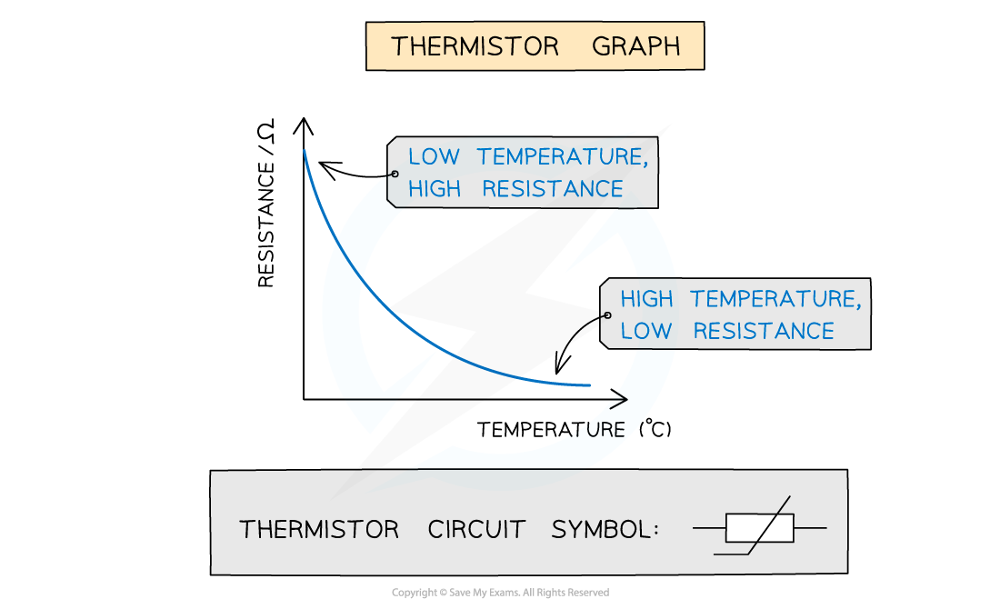
Worked Example 6 - stretched wire
A wire is stretched so that its length doubles while its volume and resistivity remain constant. By what factor does its resistance change?
Solution
Since volume \(AL\) is constant, doubling \(L\) makes the cross-sectional area \(A\) half as large. From
\[ R=\frac{\rho L}{A}, \]
the new resistance is
\[ \frac{R'}{R}=\frac{2L}{A/2}\div\frac{L}{A}=4. \]
The resistance becomes four times larger.
Multiple Choice Questions
9.1 Current & Potential Difference - Easy
Example 1 · 9.1 MC Easy Q6
The diagram shows the symbol for a wire carrying a current \(I\).
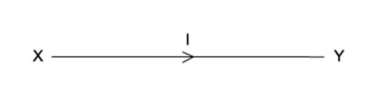
What does this current represent?
A. The amount of charge flowing past a point in XY per second.
B. The number of electrons flowing past a point in XY per second.
C. The number of positive ions flowing past a point in XY per second.
D. The number of protons flowing past a point in XY per second.
Show answer and explanation
Answer: A. Electric current is the rate of flow of charge: the amount of charge passing a point per second.Example 2 · 9.1 MC Easy Q8
The diagram shows four heaters and the current in each.
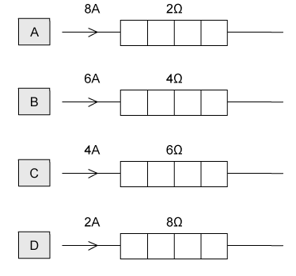
Which heater has the greatest power dissipation?
Show answer and explanation
Answer: B. Power \(P=I^2R\). The powers are: A \(8^2\times2=128\ \mathrm{W}\), B \(6^2\times4=144\ \mathrm{W}\), C \(4^2\times6=96\ \mathrm{W}\), D \(2^2\times8=32\ \mathrm{W}\). Heater B dissipates the most power.9.1 Current & Potential Difference - Medium
Example 3 · 9.1 MC Medium Q1
The diagrams show two different circuits.
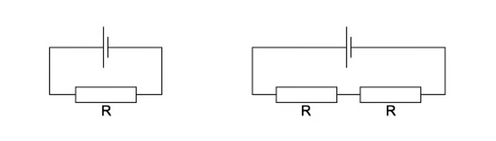
The cells in each circuit have the same electromotive force and zero internal resistance. The three resistors each have the same resistance \(R\).
In the circuit on the left, the power dissipated in the resistor is \(P\).
What is the total power dissipated in the circuit on the right?
Show answer and explanation
Answer: B. In the left circuit the total resistance is \(2R\), so the power is \(P=V^2/(2R)\). In the right circuit the effective resistance is also \(2R\) (using the printed combination), giving the power stated in option B on the diagram.Example 4 · 9.1 MC Medium Q8
A battery, with a constant internal resistance, is connected to a resistor of resistance \(250\ \Omega\), as shown.

The current in the resistor is 40 mA for a time of 60 s. During this time 6.0 J of energy is lost in the internal resistance.
What is the energy supplied to the external resistor during the 60 s and the e.m.f. of the battery?
| Energy / J | E.m.f / V | |
|---|---|---|
| A | 2.4 | 24 |
| B | 2.4 | 75 |
| C | 24 | 10.0 |
| D | 24 | 12.5 |
Show answer and explanation
Answer: D. External energy \(=I^2Rt=(0.040)^2\times250\times60=24\ \mathrm{J}\). Total energy \(=24+6=30\ \mathrm{J}\); \(E=W/Q=30/(0.040\times60)=12.5\ \mathrm{V}\).Example 5 · 9.1 MC Medium Q9
The current in the circuit shown is 4.8 A.
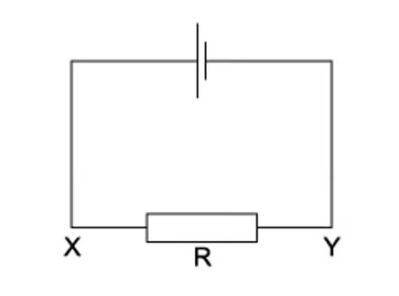
What is the direction of flow and the rate of flow of electrons through the resistor R?
| Direction of flow | Rate of flow | |
|---|---|---|
| A | X to Y | \(3.0\times10^{19}\ \mathrm{s^{-1}}\) |
| B | X to Y | \(6.0\times10^{19}\ \mathrm{s^{-1}}\) |
| C | Y to X | \(3.0\times10^{19}\ \mathrm{s^{-1}}\) |
| D | Y to X | \(6.0\times10^{19}\ \mathrm{s^{-1}}\) |
Show answer and explanation
Answer: C. Electrons flow from the negative terminal, which in this circuit is from Y to X. The rate of flow is \(I/e=4.8/(1.6\times10^{-19})=3.0\times10^{19}\ \mathrm{s^{-1}}\).9.1 Current & Potential Difference - Hard
Example 6 · 9.1 MC Hard Q1
Four point charges, each of charge \(Q\), are placed on the edge of an insulating disc of radius \(r\).
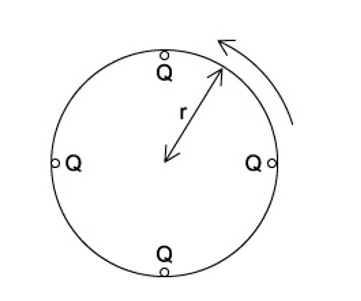
The frequency of rotation of the disc is \(f\).
What is the equivalent electric current at the edge of the disc?
A. \(4Qf\)
B. \(\frac{4Q}{f}\)
C. \(8\pi rQf\)
D. \(\frac{2Qf}{\pi r}\)
Show answer and explanation
Answer: A. In one revolution, \(4Q\) of charge passes a point. The charge passing per second is \(4Qf\), so the equivalent current is \(4Qf\).Example 7 · 9.1 MC Hard Q5
The diagram shows a model of an atom in which two electrons move round a circular orbit. The electrons complete \(1.0\times10^{15}\) revolutions around the nucleus every second.
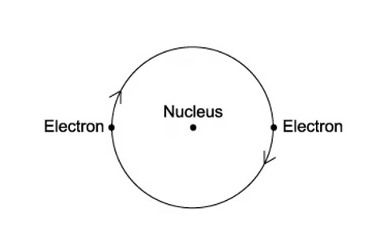
What is the current caused by the motion of the electrons in the orbit?
A. \(1.6\times10^{-4}\ \mathrm{A}\)
B. \(3.2\times10^{-4}\ \mathrm{A}\)
C. \(1.6\times10^{4}\ \mathrm{A}\)
D. \(3.2\times10^{4}\ \mathrm{A}\)
Show answer and explanation
Answer: D. Two electrons pass any point per revolution, so the charge per revolution is \(2e\). Current \(=2e\times1.0\times10^{15}=3.2\times10^{-4}\ \mathrm{A}\).Example 8 · 9.1 MC Hard Q6
A slice of germanium of cross-sectional area \(1.0\ \mathrm{cm^2}\) carries a current of \(56\ \mathrm{\mu A}\). The number density of charge carriers in the germanium is \(2.0\times10^{19}\ \mathrm{cm^{-3}}\).
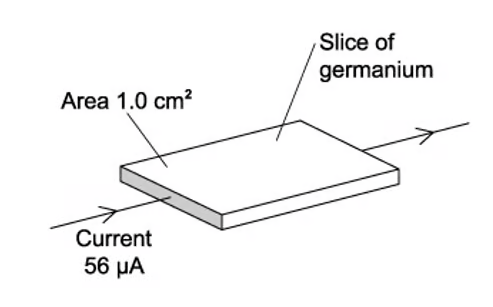
Each charge carrier has a charge equal to the charge on an electron.
What is the average drift velocity of the charge carriers in the germanium?
A. \(0.18\ \mathrm{m\,s^{-1}}\)
B. \(18\ \mathrm{m\,s^{-1}}\)
C. \(180\ \mathrm{m\,s^{-1}}\)
D. \(1800\ \mathrm{m\,s^{-1}}\)
Show answer and explanation
Answer: A. \(v=I/(nAe)=56\times10^{-6}/(2.0\times10^{25}\times1.0\times10^{-4}\times1.6\times10^{-19})\). \(v=0.18\ \mathrm{m\,s^{-1}}\).Example 9 · 9.1 MC Hard Q7
\(I_1\) and \(I_2\) are currents flowing through two different circuits, as shown in the diagram below.
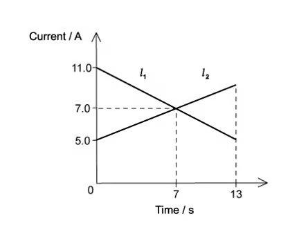
Calculate the difference in the total charge that flows through the two circuits in the first 7 seconds.
A. 0 C
B. 21 C
C. 42 C
D. 49 C
Show answer and explanation
Answer: B. The total charge is the area under each current-time graph. The difference between the two areas over the first 7 s is \(21\ \mathrm{C}\).9.2 Resistance - Easy
Example 10 · 9.2 MC Easy Q5
The graph shows how the electric current \(I\) through a conducting liquid varies with the potential difference \(V\) across it.
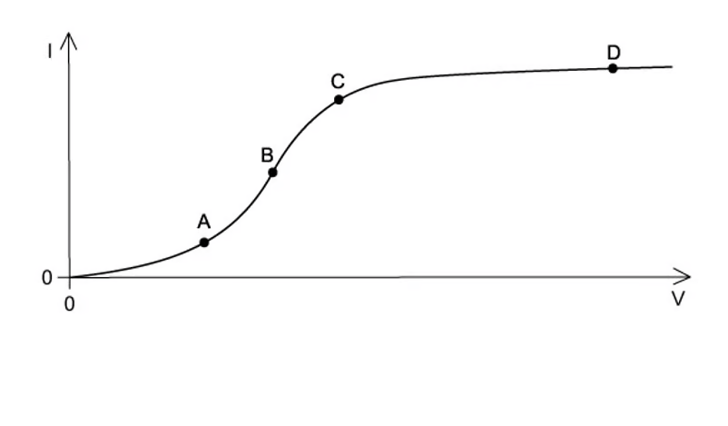
At which point on the graph does the liquid have the smallest resistance?
Show answer and explanation
Answer: B. Resistance is \(V/I\). The smallest resistance occurs where the graph is steepest, i.e. where \(I/V\) is largest.Example 11 · 9.2 MC Easy Q6
The graphs show the variation with potential difference \(V\) of the current \(I\) for three circuit components.
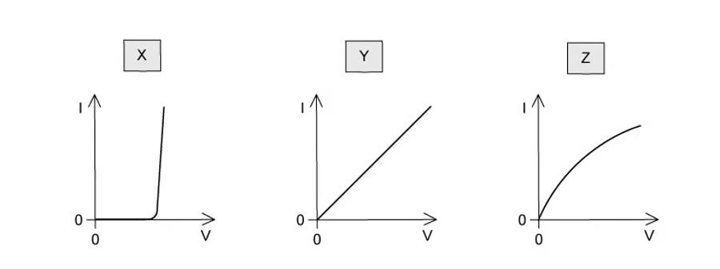
The components are a metal wire at constant temperature, a semiconductor diode and a filament lamp.
Which row of the table correctly identifies these graphs?
| Metal wire | Semiconductor diode | Filament lamp | |
|---|---|---|---|
| A | X | Z | Y |
| B | Y | X | Z |
| C | Y | Z | X |
| D | Z | X | Y |
Show answer and explanation
Answer: B. The metal wire gives a straight line through the origin (Y); the diode shows a sharp threshold (X); the filament lamp has a curved characteristic (Z).9.2 Resistance - Medium
Example 12 · 9.2 MC Medium Q1
The graph shows how current \(I\) varies with voltage \(V\) for a filament lamp.
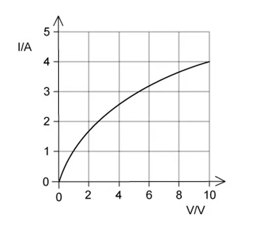
Since the graph is not a straight line, the resistance of the lamp varies with \(V\).
Which row gives the correct resistance at the stated value of \(V\)?
| \(V\) / V | \(R\) / \(\Omega\) | |
|---|---|---|
| A | 2.0 | 15 |
| B | 4.0 | 3.2 |
| C | 6.0 | 19 |
| D | 8.0 | 09 |
Show answer and explanation
Answer: C. At \(V=6.0\ \mathrm{V}\), the current read from the graph is about 0.32 A, so \(R=V/I=6.0/0.32=19\ \Omega\).Example 13 · 9.2 MC Medium Q3
The \(I\)-\(V\) characteristics of two electrical components P and Q are shown below.
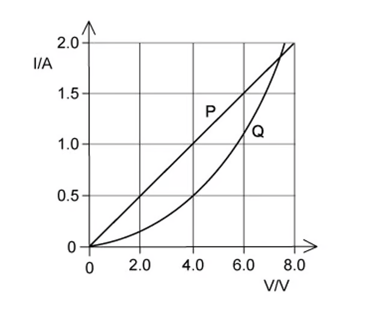
Which statement is correct?
A. P is a resistor and Q is a filament lamp.
B. The resistance of Q increases as the current in it increases.
C. For a current of 1.9 A, the resistance of Q is approximately half that of P.
D. For a current of 0.5 A, the power dissipated in Q is double that in P.
Show answer and explanation
Answer: D. At \(I=0.5\ \mathrm{A}\), the voltage across Q is twice that across P, so \(P_Q=VI\) is double \(P_P\).Example 14 · 9.2 MC Medium Q5
The variation with potential difference \(V\) of the current \(I\) in a semiconductor diode is shown below.
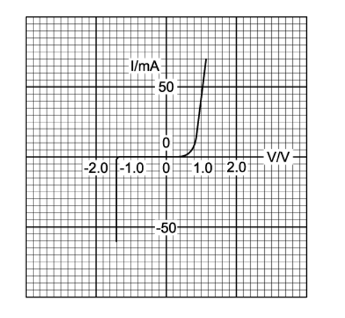
What is the resistance of the diode for applied potential differences of \(+1.0\ \mathrm{V}\) and \(-1.0\ \mathrm{V}\)?
| Resistance at \(+1.0\ \mathrm{V}\) | Resistance at \(-1.0\ \mathrm{V}\) | |
|---|---|---|
| A | 200 | infinite |
| B | 200 | zero |
| C | 0.05 | infinite |
| D | 0.05 | zero |
Show answer and explanation
Answer: A. In forward bias at 1.0 V the current is 5 mA, so \(R=1.0/0.005=200\ \Omega\). In reverse bias the current is zero, so the resistance is effectively infinite.9.2 Resistance - Hard
Example 15 · 9.2 MC Hard Q1
The diagram shows an electric pump for a garden fountain connected by an 18 m cable to a 230 V mains electrical supply.
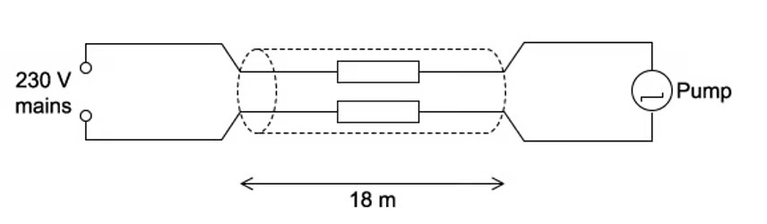
The performance of the pump is acceptable if the potential difference across it is at least 218 V. The current through it is then 0.83 A.
What is the maximum resistance per metre of each of the two wires in the cable if the pump is to perform acceptably?
A. \(0.40\ \Omega\,\mathrm{m^{-1}}\)
B. \(0.80\ \Omega\,\mathrm{m^{-1}}\)
C. \(1.30\ \Omega\,\mathrm{m^{-1}}\)
D. \(1.4\ \Omega\,\mathrm{m^{-1}}\)
Show answer and explanation
Answer: A. The maximum voltage drop in the cable is \(230-218=12\ \mathrm{V}\), so the total cable resistance is \(12/0.83=14.5\ \Omega\). Over two wires of 18 m each (36 m total), the resistance per metre is \(14.5/36=0.40\ \Omega\,\mathrm{m^{-1}}\).Example 16 · 9.2 MC Hard Q3
The circuit contains three identical lamps A, B and C and three switches S1, S2 and S3, as shown.
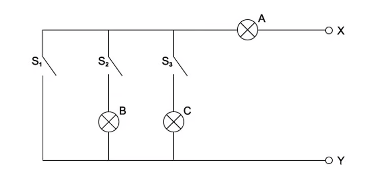
One of the lamps is faulty. An ohm-meter is connected between terminals X and Y.
Readings of the ohm-meter for different switch positions are:
| S1 | S2 | S3 | Meter reading / \(\Omega\) |
|---|---|---|---|
| open | open | open | infinity |
| closed | open | open | 15 |
| open | closed | open | 30 |
| open | closed | closed | 15 |
Which lamps are faulty?
A. A & B
B. B only
C. B & C
D. C only
Show answer and explanation
Answer: D. With S2 closed the reading is 30 (lamp A only); adding S3 gives 15, so the parallel path through C is faulty, leaving only lamp B’s path. Lamp C is the faulty lamp.Example 17 · 9.2 MC Hard Q8
The graph shows the relationship between potential difference \(V\) and current \(I\) for a fixed 20 Ω resistor and a filament lamp.
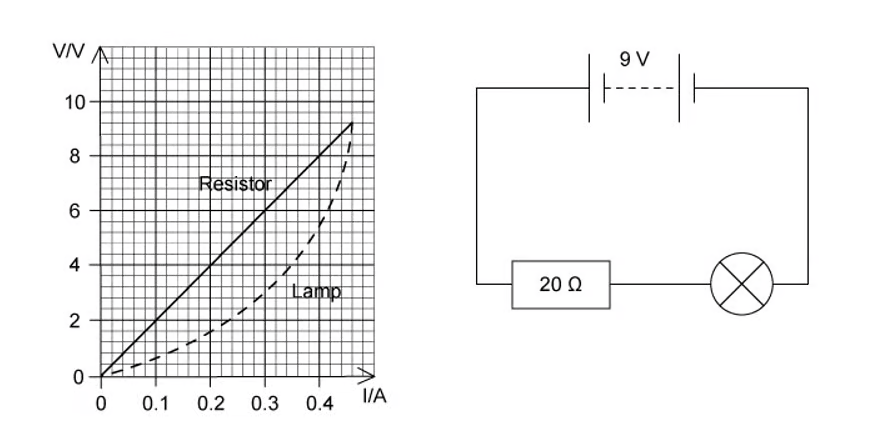
The resistor and lamp are placed in series with a 9 V battery of negligible internal resistance.
What is the current in the circuit?
A. 0.1 A
B. 0.2 A
C. 0.3 A
D. 0.4 A
Show answer and explanation
Answer: C. For the same current, the sum of the p.d.s across the lamp and resistor must be 9 V. Reading the graphs at the current where \(V_{\text{lamp}}+V_{\text{resistor}}=9\ \mathrm{V}\) gives \(I=0.3\ \mathrm{A}\).9.3 Resistivity - Easy
Example 18 · 9.3 MC Easy Q4
A light-dependent resistor (LDR) is connected in series with a resistor \(R\) and a battery.
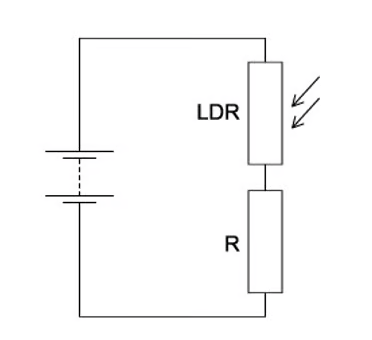
The resistance of the LDR is equal to the resistance of \(R\) when no light falls on the LDR. When the light intensity falling on the LDR increases, which statement is correct?
A. The current in R decreases.
B. The current through the LDR decreases.
C. The p.d. across R decreases.
D. The p.d. across the LDR decreases.
Show answer and explanation
Answer: D. When the light intensity increases, the LDR resistance decreases. A smaller fraction of the supply p.d. is then across the LDR, so the p.d. across the LDR decreases.9.3 Resistivity - Medium
Example 19 · 9.3 MC Medium Q1
Two wires P and Q made of the same material are connected to the same electrical supply.

P has twice the length of Q and one-third of the diameter of Q.
What is the ratio \(\frac{\text{current in P}}{\text{current in Q}}\)?
A. \(\frac{2}{9}\)
B. \(\frac{2}{3}\)
C. \(\frac{1}{6}\)
D. \(\frac{1}{18}\)
Show answer and explanation
Answer: D. \(R_P/R_Q=(\rho L/A)_P/(\rho L/A)_Q\). \(A_P=A_Q/9\) and \(L_P=2L_Q\), so \(R_P=18R_Q\). With the same supply voltage, \(I_P/I_Q=R_Q/R_P=1/18\).9.3 Resistivity - Hard
Example 20 · 9.3 MC Hard Q1
A thermistor and another component are connected to a constant voltage supply. A voltmeter is connected across one of the components. The temperature of the thermistor is then reduced, but no other changes are made.
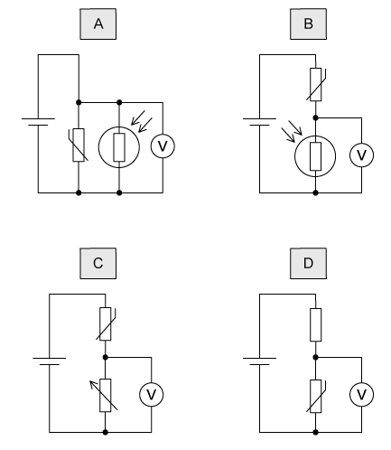
In which circuit will the voltmeter reading increase?
Show answer and explanation
Answer: D. When the temperature is reduced, the thermistor resistance increases. The voltmeter reading increases when it is connected across the thermistor (option D), because the p.d. across the larger resistance increases.Structured Questions
9.1 Current & Potential Difference - Medium
Example 1 · 9.1 SQ Medium Q2
The smallest conductor within a computer processing chip can be represented as a rectangular block that is one atom high, four atoms wide and twenty atoms long. One such block is shown in Fig. 1.1.

The block is made from phosphorus atoms of diameter \(d=3.8\times10^{-10}\ \mathrm{m}\). The atoms are deposited on an insulating surface. This ensures that the atoms touch each other.
The processing chip has a resistance, measured from P to Q, of \(220\ \Omega\).
(a)
(i) Define current. [1]
(ii) Describe, for this processing chip, the properties which will affect the current. [3]
[4 marks]
(b) Calculate the number density of free electrons within the block. Assume that each phosphorus atom contributes one free electron. [1 mark]
(c) Calculate the current between P and Q when the mean drift velocity of free electrons in the block is \(1.9\times10^{-5}\ \mathrm{m\,s^{-1}}\). [3 marks]
(d) There are about \(10^{12}\) of these tiny conductors in a single chip, each carrying the current calculated in part (c).
Estimate the total power dissipated in these conductors in a single chip. [3 marks]
Show mark scheme / model answer
- (a)(i) Current is the rate of flow of charge carriers.
[1] - (a)(ii) Current depends on the charge per carrier,
[1]the number density of free electrons (one per atom),[1]and the cross-sectional area of the block.[1] - (b) Number density \(n=1/d^3=1/(3.8\times10^{-10})^3=1.82\times10^{28}\ \mathrm{m^{-3}}\).
[1] - (c) Cross-sectional area \(A=4d\times d=4(3.8\times10^{-10})^2=5.78\times10^{-19}\ \mathrm{m^2}\).
[1]\(I=nAve=1.82\times10^{28}\times5.78\times10^{-19}\times1.9\times10^{-5}\times1.6\times10^{-19}\).[1]\(I=3.2\times10^{-14}\ \mathrm{A}\).[1] - (d) Power per conductor \(=I^2R=(3.2\times10^{-14})^2\times220\).
[1]Total power \(=I^2R\times10^{12}\).[1]Total \(\approx2\times10^{-13}\ \mathrm{W}\).[1]
Example 2 · 9.1 SQ Medium Q3
A power source is connected across a component. The current in the component is 40 mA.
(a) Calculate the total charge that flows past a point in the component in 3 minutes. [1 mark]
(b) Calculate the number of electron charge carriers passing the same point in the conductor in this time. [1 mark]
(c) 8.6 J of energy are transferred to the conductor in this time.
(i) Calculate the potential difference across the component. [2]
(ii) Calculate the resistance of the conductor. [2]
[4 marks]
Show mark scheme / model answer
- (a) \(Q=It=0.040\times180=7.2\ \mathrm{C}\).
[1] - (b) Number of electrons \(=Q/e=7.2/(1.6\times10^{-19})=4.5\times10^{19}\).
[1] - (c)(i) \(V=W/Q=8.6/7.2=1.2\ \mathrm{V}\).
[2] - (c)(ii) \(R=V/I=1.2/0.040=30\ \Omega\).
[2]
9.2 Resistance - Medium
Example 3 · 9.2 SQ Medium Q1
The photograph shows a statue of Buddha in Sri Lanka, which is protected by a lightning conductor.

During a storm, a potential difference of 2.7 MV was generated between a cloud and the top of the lightning conductor on the statue. A flash of lightning passed between the cloud and the lightning conductor, producing a current of 25 kA for a time of 7.5 ms.
(a) Calculate the energy transferred by the lightning strike. [3 marks]
(b) The lightning conductor is made from copper.
Sketch an \(I\)-\(V\) graph for the rod when it conducts a lightning strike to earth. [3 marks]
(c) Explain any changes which the lightning rod would undergo during a lightning strike. [3 marks]
Show mark scheme / model answer
- (a) \(Q=It=25\times10^3\times7.5\times10^{-3}=187.5\ \mathrm{C}\).
[1]\(W=VQ=2.7\times10^6\times187.5\).[1]\(W=5.1\times10^8\ \mathrm{J}\).[1] - (b) The rod heats up during the strike, so it behaves like a non-ohmic conductor. Sketch a curved \(I\)-\(V\) graph similar to a filament lamp, with the curve flattening at high current.
[3] - (c) The rod becomes hot (temperature rises);
[1]its resistance increases with temperature;[1]it may glow or expand slightly due to heating.[1]
Example 4 · 9.2 SQ Medium Q2
(a) Fig. 1.1 shows the graph of \(V\) against \(I\) for a non-ohmic conductor.
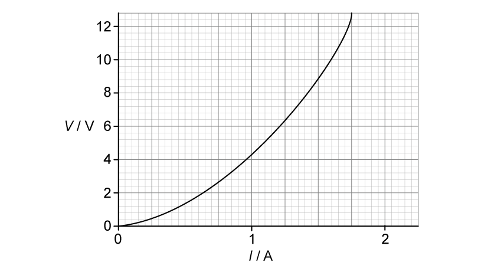
Calculate the maximum resistance of the lamp over the range shown by the graph. [3 marks]
(b) Using the axes in Fig. 1.2, sketch the graph of current against potential difference for a diode. [2 marks]
(c) For the graph in Fig. 1.3 determine:
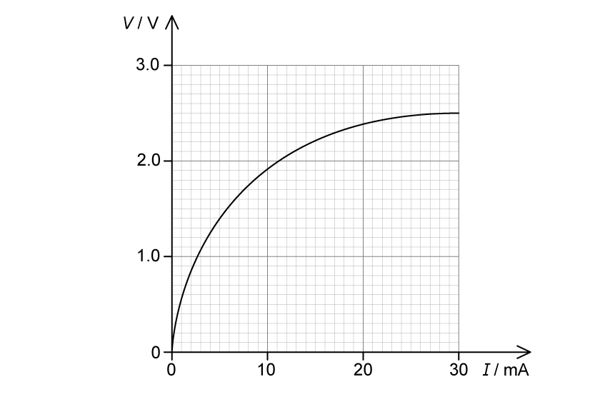
(i) the resistance when current \(=10\ \mathrm{mA}\); [2]
(ii) the power when current \(=10\ \mathrm{mA}\). [1]
[3 marks]
Show mark scheme / model answer
- (a) The maximum resistance occurs at the steepest point of the graph.
[1]From the graph, \(V=12.8\ \mathrm{V}\) and \(I=1.75\ \mathrm{A}\).[1]\(R=V/I=12.8/1.75=7.3\ \Omega\).[1] - (b) Draw a diode characteristic: current zero for negative voltages, then a steep rise between about 0.6 V and 1.0 V in forward bias.
[2] - (c)(i) At \(I=10\ \mathrm{mA}\), \(V=1.9\ \mathrm{V}\), so \(R=V/I=1.9/0.010=190\ \Omega\).
[2] - (c)(ii) \(P=I^2R=(0.010)^2\times190=1.9\times10^{-2}\ \mathrm{W}=19\ \mathrm{mW}\).
[1]
Example 5 · 9.2 SQ Medium Q3
An electrical component has the \(I\)-\(V\) characteristic shown in Fig. 1.1.
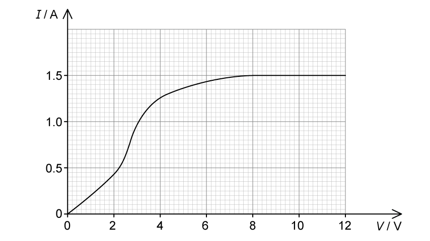
(a) Determine the resistance of the component when a potential difference of 6.0 V is applied across it. [2 marks]
(b) For the component in part (a), calculate the minimum value of \(R\) as the potential difference across it changes over the range 0–10 V. [2 marks]
(c) For the component in part (a) calculate:
(i) the power dissipated when \(V=2.0\ \mathrm{V}\); [2]
(ii) the maximum power dissipated before the component heats up; [2]
(iii) the value of resistance at the point identified in part (ii). [2]
[6 marks]
Show mark scheme / model answer
- (a) At \(V=6.0\ \mathrm{V}\), read \(I\) from the graph (about 1.43 A).
[1]\(R=V/I=6.0/1.43=4.2\ \Omega\).[1] - (b) The minimum resistance occurs where the graph is steepest.
[1]\(R_{\min}=3.0\ \Omega\).[1] - (c)(i) At \(V=2.0\ \mathrm{V}\), \(I\approx0.9\ \mathrm{A}\), so \(P=VI=2.0\times0.9=1.8\ \mathrm{W}\).
[2] - (c)(ii) The maximum power before heating occurs at the highest point of the graph: \(P_{\max}=V_{\max}I_{\max}\).
[2] - (c)(iii) The resistance at that point is \(R=V/I\) using the values from part (ii).
[2]
9.3 Resistivity - Easy
Example 6 · 9.3 SQ Easy Q1
A straight wire of unstretched length \(L\) has an electrical resistance \(R\). The area of the cross-section \(A\) of the wire may be assumed to be constant.
(a) State the relation between \(R\), \(L\), \(A\) and the resistivity \(\rho\) of the material of the wire. [1 mark]
(b) Measurements made for a sample of metal wire are shown in Table 1.1.
| Quantity | Measurement |
|---|---|
| resistance | 61 Ω |
| diameter | 0.44 mm |
| length | 1390 mm |
State the most appropriate instrument to use to measure:
(i) the resistance of the wire; [1]
(ii) the diameter of the wire; [1]
(iii) the length of the wire. [1]
[3 marks]
(c) Show that the resistivity of the metal is \(6.67\times10^{-7}\ \Omega\,\mathrm{m}\). [1 mark]
Show mark scheme / model answer
- (a) \(R=\rho L/A\).
[1] - (b)(i) Voltmeter and ammeter, or an ohmmeter (multimeter on the ohm setting).
[1] - (b)(ii) Micrometer screw gauge (or vernier callipers).
[1] - (b)(iii) Metre rule or tape measure.
[1] - (c) \(\rho=RA/L=61\times\pi(0.22\times10^{-3})^2/1.39\).
[1]\(\rho=6.67\times10^{-7}\ \Omega\,\mathrm{m}\).[1]
Example 7 · 9.3 SQ Easy Q2
(a) On Fig. 1.1, sketch the change in resistance with temperature for a thermistor.
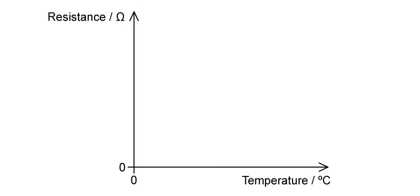
[2 marks]
(b) Cobalt is commonly used to create thermistors. At \(20^\circ\mathrm{C}\) a wire of cobalt is used to create a thermistor and has an electrical resistivity of \(5.6\times10^{-8}\ \Omega\,\mathrm{m}\).
State and explain what would happen to the resistivity of the thermistor if its temperature is increased to \(60^\circ\mathrm{C}\). [3 marks]
(c)
(i) State the meaning of LDR. [1]
(ii) On Fig. 1.2, sketch the change in resistance with light intensity for an LDR.

[2]
[3 marks]
(d) An LDR is connected to a circuit to operate an automatic street light. The resistance of the LDR is measured to be 5 kΩ at one time and 20 MΩ at another.
State which resistance the LDR is likely to be at during the day and which it will be at night. [2 marks]
Show mark scheme / model answer
- (a) Draw a curve showing resistance decreasing as temperature increases, starting high at low temperature and flattening at high temperature.
[2] - (b) The resistivity of the thermistor decreases.
[1]As temperature increases, more charge carriers become available.[1]This reduces the resistance (and hence the resistivity) of the thermistor.[1] - (c)(i) LDR stands for light-dependent resistor.
[1] - (c)(ii) Draw a curve showing resistance decreasing as light intensity increases.
[2] - (d) During the day the LDR is illuminated, so its resistance is the low value of 5 kΩ.
[1]At night it is dark, so its resistance is the high value of 20 MΩ.[1]
9.3 Resistivity - Medium
Example 8 · 9.3 SQ Medium Q1
An electrical heating element, made from uniform nichrome wire, is required to dissipate 600 W when connected to the 230 V mains supply.
The radius of the wire is 0.16 mm.
(a) Calculate the length of nichrome wire required.
Resistivity of nichrome \(=1.1\times10^{-6}\ \Omega\,\mathrm{m}\) [5 marks]
(b) Suggest two properties that the nichrome wire must have to make it suitable as an electrical heating element. [2 marks]
(c) Explain why the resistivity of the nichrome wire changes with temperature. [3 marks]
(d) An engineer wants to use the same uniform nichrome wire in another identical electrical heating element which is also required to dissipate 600 W when connected to the 230 V mains supply.
The only nichrome wire they have available has a radius of 0.08 mm.
Calculate the length needed for this new nichrome wire to produce the same current through the heating element. [3 marks]
Show mark scheme / model answer
- (a) \(R=V^2/P=230^2/600=88.2\ \Omega\).
[1]\(A=\pi r^2=\pi(0.16\times10^{-3})^2=8.04\times10^{-8}\ \mathrm{m^2}\).[1]\(L=RA/\rho=88.2\times8.04\times10^{-8}/(1.1\times10^{-6})\).[2]\(L=6.4\ \mathrm{m}\).[1] - (b) High resistivity,
[1]and a high melting point (or resistance to oxidation at high temperature).[1] - (c) As the temperature rises, the metal atoms vibrate more.
[1]This increases the rate of collisions with the charge carriers,[1]so the resistivity increases with temperature.[1] - (d) For the same current, the resistance must remain 88.2 Ω.
[1]The new area is one quarter of the original,[1]so the required length is \(6.4/4=1.6\ \mathrm{m}\).[1]
Example 9 · 9.3 SQ Medium Q2
(a) A student investigates the resistivity \(\rho\) of a length of wire \(l\), with resistance \(R\), diameter \(d\) and a potential difference \(V\) through it.
Determine the resistivity, in terms of \(\rho\), of a wire of the same length with a diameter \(2d\) and a potential difference \(3V\) through it instead. [3 marks]
(b) The student decides to investigate how the cross-sectional area of a wire affects its resistance. The circuit they use to carry out the experiment is shown in Fig. 1.1.
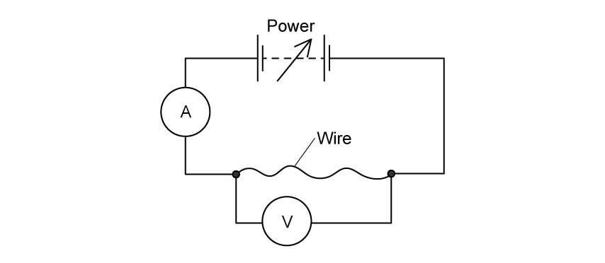
Describe a method to accurately determine the cross-sectional area of the wires. [3 marks]
(c) The student uses three pieces of nichrome wire, each 1.5 m long. The cross-sectional areas of the pieces of wire are \(0.45\ \mathrm{mm^2}\), \(0.21\ \mathrm{mm^2}\) and \(0.89\ \mathrm{mm^2}\).
Sketch a graph of voltage \(V\) against the current \(I\) for each of the wires. [3 marks]
Show mark scheme / model answer
- (a) Resistivity is a property of the material and does not change with dimensions or applied voltage.
[1]The new wire has the same material, so its resistivity is still \(\rho\).[2] - (b) Measure the diameter at several points along the wire with a micrometer screw gauge.
[1]Calculate the mean diameter.[1]Use \(A=\pi d^2/4\) to find the cross-sectional area.[1] - (c) For each wire, \(V=IR\) with \(R=\rho L/A\).
[1]The wire with the largest area has the smallest gradient; the wire with the smallest area has the largest gradient.[1]Draw three straight lines through the origin with gradients in the order \(A=0.21\), then 0.45, then 0.89 (steepest to least steep).[1]
9.3 Resistivity - Hard
Example 10 · 9.3 SQ Hard Q1
A wire of cross-sectional area \(A\) is made from metal of resistivity \(\rho\). The wire is extended. Assume that the volume \(V\) of the wire remains constant as it is extended.
(a) On Fig. 1.1, sketch how the resistance \(R\) of the extending wire varies with the length \(l\).
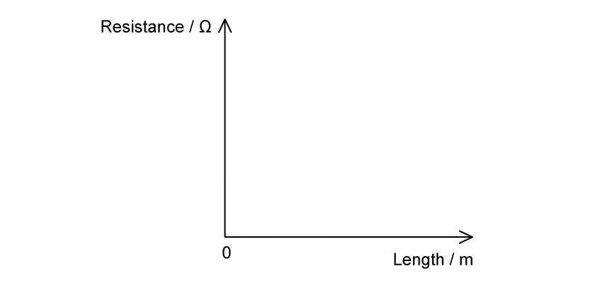
[2 marks]
(b) Two resistors X and Y have resistance \(R_X\) and \(R_Y\) respectively. The resistors are connected in series with a battery with electromotive force \(E\) and zero internal resistance, as shown in Fig. 1.1.
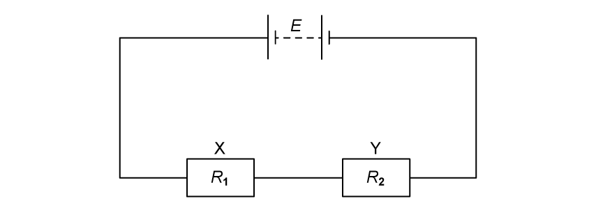
The resistors are made from metal wires. Data from the resistors are given in Table 1.1.
| resistor X | resistor Y | |
|---|---|---|
| diameter of metal | \(d\) | \(4d\) |
| length of metal | \(2l\) | \(l\) |
| resistivity of metal | \(4\rho\) | \(\rho\) |
Use information from Table 1.1 to determine the ratio
\[\frac{\text{power dissipated in Y}}{\text{power dissipated in X}}.\] [3 marks]
(c) Show that the product of the ratio \(\frac{\text{power dissipated in Y}}{\text{power dissipated in X}}\) of X and Y connected in series and connected in parallel is 1. [3 marks]
Show mark scheme / model answer
- (a) Since the volume is constant, \(R=\rho l^2/V\), so \(R\propto l^2\).
[1]Draw a curve through the origin with an increasing gradient.[1] - (b) \(R_X=\rho_X L_X/A_X=4\rho(2l)/(\pi d^2/4)=32\rho l/(\pi d^2)\); \(R_Y=\rho l/(\pi(4d)^2/4)=\rho l/(4\pi d^2)\).
[1]In series the current is the same, so \(P=I^2R\).[1]\(P_Y/P_X=R_Y/R_X=(\rho l/4)/(32\rho l)=1/128\).[1] - (c) In parallel the voltage is the same, so \(P=V^2/R\), giving \(P_Y/P_X=R_X/R_Y=128\).
[1]The product of the series and parallel ratios is \(1/128\times128=1\).[2]
Chapter checklist
Original question PDFs
- 9.1 Current & Potential Difference - MC Easy
- 9.1 Current & Potential Difference - MC Medium
- 9.1 Current & Potential Difference - MC Hard
- 9.1 Current & Potential Difference - SQ Medium
- 9.2 Resistance - MC Easy
- 9.2 Resistance - MC Medium
- 9.2 Resistance - MC Hard
- 9.2 Resistance - SQ Medium
- 9.3 Resistivity - MC Easy
- 9.3 Resistivity - MC Medium
- 9.3 Resistivity - MC Hard
- 9.3 Resistivity - SQ Easy
- 9.3 Resistivity - SQ Medium
- 9.3 Resistivity - SQ Hard